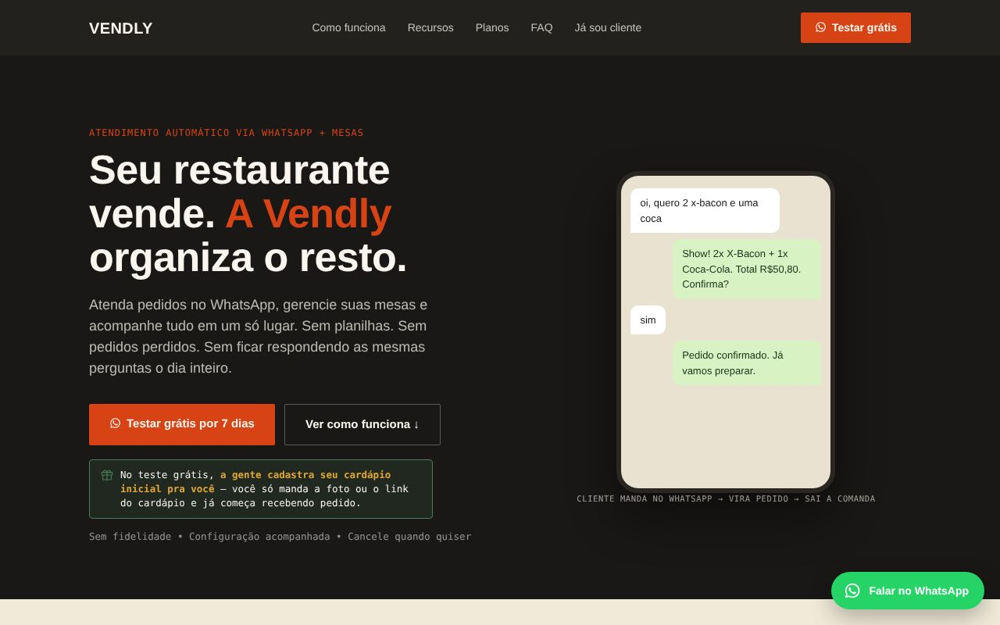

Projeto principal · em produção
Vendly
Atendente de IA no WhatsApp para restaurantes. O cliente pede em linguagem natural, a IA confere com o cardápio real, registra o pedido e a comanda sai impressa na cozinha. Também tem controle de mesas pro atendimento presencial, no mesmo estoque e painel.
- Preço, total e troco sempre recalculados pelo código, nunca pelo valor que a IA gerou
- Saída da IA em JSON estruturado (tool use) pra evitar respostas inconsistentes
- Multiempresa com dados isolados por cliente, login de atendente e planos
- PostgreSQL com transações e trava de linha pra pedidos simultâneos na mesma mesa
- Deploy em VPS Linux com Docker e pm2; apresentado ao Hotel Tecnológico da UTFPR
- Node.js
- PostgreSQL
- Docker
- API da Anthropic
- Evolution API